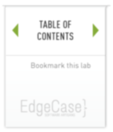
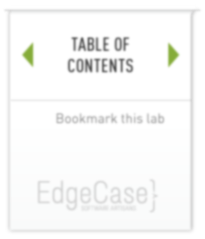

lab 6 Staging Changes
Goals
- Learn how to stage changes for later commits
Add Changes 01
Now tell git to stage the changes. Check the status
Execute:
git add hello.rb git status
You should see …
Output:
$ git add hello.rb $ git status # On branch master # Changes to be committed: # (use "git reset HEAD <file>..." to unstage) # # modified: hello.rb #
The change to the hello.rb file has been staged. This means that git now knows about the change, but the change hasn’t been permanently recorded in the repository yet. The next commit operation will include the staged changes.
If you decide you don’t want to commit that change after all, the status command reminds you that the git reset command can be used to unstage that change.